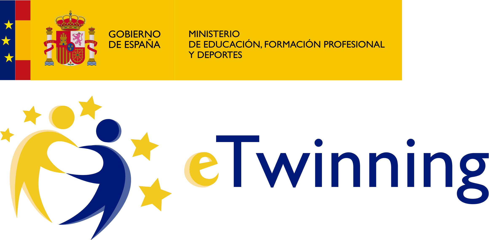

En un mundo globalizado es fundamental comprender y valorar nuestras raíces locales, especialmente en el contexto de la agricultura, un pilar esencial de nuestra identidad cultural. Este proyecto eTwinning "Explorando nuestra riqueza agrícola" invita a sumergirse en un viaje de descubrimiento hacia la riqueza de nuestros cultivos locales. A través de la colaboración entre estudiantes, exploramos la diversidad agrícola de nuestra región, compartiendo conocimientos, experiencias y tradiciones para honrar y comprender mejor la importancia de nuestros cultivos locales en la comunidad global actual.